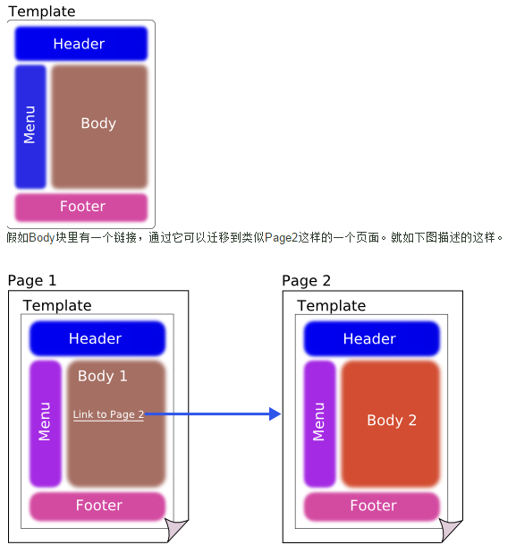

分享人：徐海鹏
1.背景介绍
2.知识剖析
3.常见问题
4.解决方案
5.编码实战
6.扩展思考
7.参考文献
8.更多讨论
假如有一个超级大的电子商务网站，网站拥有10万个JSP页面，并且每个JSP都引用了同一个JSP（我们称这个JSP页面为A吧）。现在你就是这个网站的开发人员，有一天老板跑到你面前说：“大量用户反馈页面A设计得太丑，严重影响用户体验，如果不在今天之内改进，他们就集体去竞争对手那里购物，所以你今天必须要让页面A从网站上消失，否则炒鱿鱼走人”，这个凶神恶霸的老板说完就甩手走出去了，你没有任何辩解的机会。这时，恐怕你不会觉得自己一人能够搞定，那怎么办？程序员都有很多好基友，找一百个基友来一起改，每人只需要改1000个页面。不然，只有垂头丧气地收拾好东西离职了。
那么，要是有一天老板又跑过来找你，让你为每个JSP页面的底部加一个跳舞的小黄人，又该怎么办呢？先找前端工程师设计好跳舞的小黄人，然后用include标签插入到10万个JSP页面。10万个啊，又得请一百个好基友帮忙了！要是老板后面又要在网站顶端加一只唱歌的小鸟、在网站右边加一个工具栏…估计你的好基友要用砖头来砸你了。
那有没有一种方法，可以不用请一百个好基友帮忙，就可以在十分钟之内完成老板交给你的任务？也许你会觉得这简直是胡说八道，在十分钟内改完10万个JSP页面就是一种疯狂的想法。也许这是对的，就是一个疯狂的想法，不清楚Tiles的设计者当初也是否受到过这种老板的虐待，所以才设计出了这样一个疯狂的产品—— Tiles 。
没错，Tiles就是为你遇到的这种需求服务的。一旦你在网站系统中使用了Tiles技术，若老板让你删除10万个页面所引用的一个JSP，如果你的速度快的话，你可以在10秒钟之内解决。那要想再让这10万个页面去引用一个JSP呢？也是一样的操作，非常简单。
tiles的作用
所有的网站都有一些共同点：它们由共享类似结构的页面组成。页面共享相同的布局，而每个页面由不同的独立部分组成，但始终放置在整个站点的相同位置。
为了方便大家理解，我们来看一个例子。

正如我们看到的，这两个页面是不同的，但是不同的地方仅仅是body这部分区域。于是我们想，有没有好的办法能够把共通的地方复用起来，让我们维护的页面尽可能的少。这就tiles的作用所在了。
tiles的配置
定义：definition
定义是呈现给最终用户的组合物；本质上，一个定义是由一个模板和完全或部分填充的属性组成的。说白了就是：一个定义是由一个模板和属性组成的。
模板:Template
在Tiles中，模板（Template）是一个页面的布局部分。你能将一个页面结构看成是由不同的需要填补空白组成。
注意：一个模板（Template）可以没有属性（attributes）,这种情况下该模板可以直接使用。有属性的话就要先定义属性才能使用，不然的话就会在解析jsp页面的时候报错
属性：Attribute
属性是模板中的空白，它在你的应用程序中被填充到模板中。
include也可以实现多个jsp共用一个jsp的内容,为什么要使用tiles呢?
刚接触web开发的人或许知道jsp可以通过include标签动态插入一个jsp页面,这样可以实现多个jsp页面共用一个jsp的内容.但是如果有一个超级大网站,jsp页面以万计呢?
1、在Spring MVC应用程序中，我们经常需要应用一些视图解析器策略来解析视图名称。如果返回了一个视图的名称，那么，使用哪一个视图解析器策略?
如果应用了多个视图解析器策略，那么就必须通过“order”属性来声明优先级，order值越低，则优先级越高
2、除了tiles还有别的模板复用框架么？
市面上还有许多的，比如beetl、sitemesh、thymeleaf、 freemarker等等
欢迎大家交流和讨论
感谢大家观看
BY : 徐海鹏